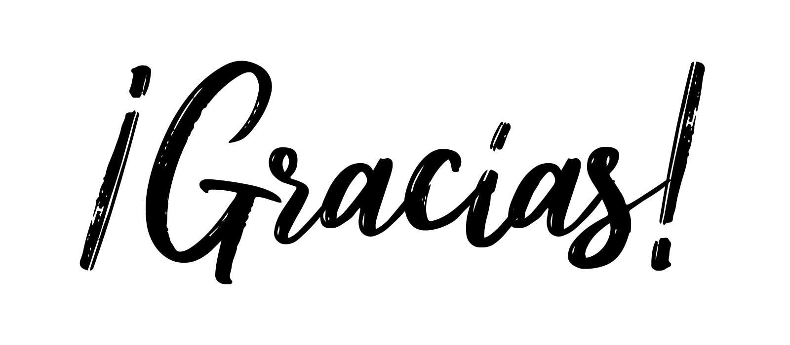

Intro
Este es un proyecto de vida elaborado para reforzar lo aprendido en anteriores clases.

Este es un proyecto de vida elaborado para reforzar lo aprendido en anteriores clases.
Soy Elaine, tengo 19 años y me considero tanto asocial como social, mi personalidad de depende de mi estado de animo y de como este el dia, pero soy un amor por otro lado, soy complicada y avaces creo que eso hace que las personas se alejen de mi, pero al final entiendo que eso depende de la persona que sea y que tengo que aprender a vivir con ello o saber controlarlo. Tambien esto terminando mi año escolar y pronto iniciare la Universidad, quiero estudiar educacion y ser una buena maestra de nivel incial, tambien me gustaria hacer diversos cursos y prepararme en distintas cosas para tener un buen futuro.

Las cosas que me hacen feliz es comer, compartir con mis amigos, salir a cualquier lugar, leer y hacer diversas cosas con amigos.
Soy una persona con un caarcter fuerte y me enojo muy rapido por cualquier cosa, entendia que eso le hacia daño a las personas cercanas a mi y decidi aprender a controlar tanto mis enojos como emociones.
Mi personalidad y carisma.

Mis agradecimeintos son dirigidos para los profesores Harold Liriano y Kelvin Mateo, le agradezco por enseñarme acerca de los programas, Java Scrip, HTML,CCS y otros mas, tambien le agradezco a infotep por la oportunidad de poder reforzar los conocimientos aprendidos y ponerlos en practica junto al profesor Cristian Nuñez y su ayudante Albert Garcia.
